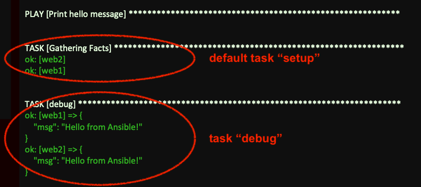
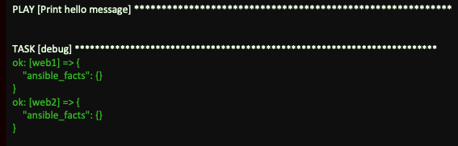
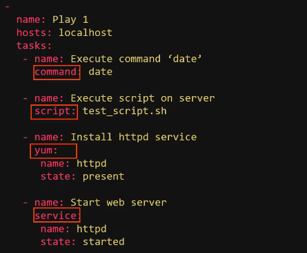
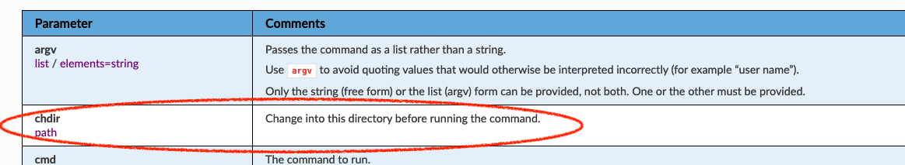
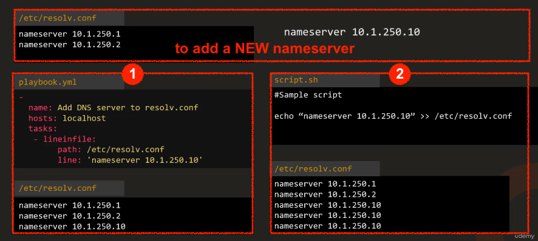
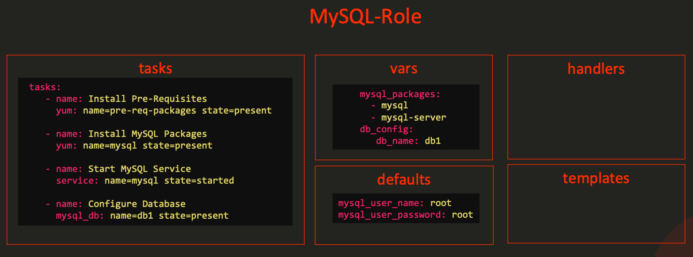

HandsOn
1. Install¶
brew install ansible
Warning
Ansible is VERY STRICT about identation
2. Config¶
double check the version and where the default config file is:
> ansible --version
ansible [core 2.18.6]
config file = None
configured module search path = ['/Users/<User>/.ansible/plugins/modules', '/usr/share/ansible/plugins/modules']
ansible python module location = /opt/homebrew/Cellar/ansible/11.7.0_1/libexec/lib/python3.13/site-packages/ansible
ansible collection location = /Users/<User>/.ansible/collections:/usr/share/ansible/collections
executable location = /opt/homebrew/bin/ansible
python version = 3.13.7 (main, Aug 14 2025, 11:12:11) [Clang 17.0.0 (clang-1700.0.13.3)] (/opt/homebrew/Cellar/ansible/11.7.0_1/libexec/bin/python)
jinja version = 3.1.6
libyaml = True
Config File
- commonly used location in iOS:
/Users/<User>/ansible.cfg -
the configuration parameters are divided into sections:
[default][inventory][privileges_escalation][paramiko_connection][ssh_connection][persistent_connection][colors]
-
example of
[default]section:[defaults] inventory = /etc/ansible/hosts 1og_path = /var/log/ansible.log library = /usr/share/my_modules/ roles_path = /etc/ansible/roles action_plugins = /usr/share/ansible/plugins/action gathering = implicit # SSH timeout timeout = 10 forks = 5
Multiple Configuration Possiblities with priority
- [CLI] single parameter as ENV:
- temporary oneliner:
ANSIBLE_GATHERING=explicit ansible-playbook playbook.yml - shell-wide:
export ANSIBLE_GATHERING=explicit ansible-playbook playbook.yml
- temporary oneliner:
- [CLI]
ANSIBLE_CONFIG=*.cfgfile pass as ENV:ANSIBLE_CONFIG=/opt/ansible-common.cfg ansible-playbook playbook.yml - [FILE]
*.cfgin the Playbook's directory - [FILE]
~/.ansible.cfgin HOME directory - [FILE] default
ansible.cfg(in MacOS, mostly in/Users/<User>/ansible.cfg)
View Configuration
# render all config
ansible-config list
# show current config file
ansible-config view
# show all config, and where got them from
ansible-config dump
3. Inventory¶
inventory is a list of all machines that involved in task executions. the Inventory can be written in INI or YAML formats, here are examples:
- INI
10.24.0.100 [webservers] webl.example.com Web2.example.com [dbservers] 10.24.0.7 10.24.0.8 [allservers:children] webservers dbservers -
YAML: suitable for more complex organisation
allservers: children: webservers: hosts: webl.example.com: web2.example.com: dbservers: hosts: db1.example.com: db2.example.com: -
you can use either IP address or hostnames
- the IP could be from Cloud Servers, Virtual Machine or Bare Metal Servers
- default inventory file:
/etc/ansible/hosts
alias¶
here we specifiy alias: web, db, mail, web2
web ansible_host=server1.company.com
db ansible_host=server2.company.com
mail ansible_host=server3.company.com
web2 ansible_host=server4.company.com
inventory parameters¶
common inventory parameters:
ansible_host: the FQDN or IP address of a serveransible_connection: how to connect to the serveransible_port: the connection port --> by default22for sshansible_user: the user used to make remote connections --> by default isrootfor linuxansible_ssh_passdefines the SSH password for Linux. --> NOT best practise -> because the password will be plain text
Example:
web ansible_host=server1.company.com ansible_connection=ssh ansible_user=root
db ansible_host=server2.company.com ansible_connection=winrm ansible_user=admin
mail ansible_host=server3.company.com ansible_connection=ssh ansible_ssh_pass=p@ssw0rd
web2 ansible_host=server4.company.com ansible_connection=winrm
# localhost:
# 有一个名为 "localhost" （alias=localhost） 的目标主机
# ansible_connection=localhost:
# 使用 localhost 连接插件（即不在远程服务器上执行，而是在当前控制机本地执行任务）
localhost ansible_connection=localhost
winrm
WinRM stands for Windows Remote Management. It is Microsoft's protocol for remotely managing Windows systems, similar to what SSH is for Linux/Unix systems.
ansible_connection |
inventory parameters for password |
|---|---|
ssh |
ansible_ssh_pass |
winrm |
ansible_password |
groups¶
use [group_name] to group servers together, so that you can reference them in the Play
[webservers]
web1.myserver.com
web2.myserver.com
group of groups¶
[web_servers]
web1
web2
[db_servers]
db1
[all_servers:children] # <-- 注意这里要加 :children
web_servers
db_servers
常见的应用场景
make groups out of different perspectives:
[db_nodes]
sql_db1
sql_db2
[web_nodes]
web_node1
web_node2
web_node3
[boston_nodes]
sql_db1
web_node1
[dallas_nodes]
sql_db2
web_node2
web_node3
4. Variables¶
Variables store information that varies with each host using Jinja2 Tempating. The Common Inventory Parameters are pre-defined variables.
Example:
name: Add DNS server to resolv.conf
hosts: localhost
vars:
dns_server: 10.1.250.10 # variable definition
tasks:
- lineinfile:
path: /etc/resolv.conf
line: 'nameserver {{ dns_server }}' # variable usage
how to use
- pure variable:
source: '{{ dns_server }}'--> WITH quotes! - variable concatenated in text:
source: blabla{{ dns_server }}blabla--> WITHOUT quotes!
Types¶
- String
- Number: integer or float
- Boolean:
true=True,'true','t','yes','y','on','1',1,1.0false=False,'false','f','no','n','off','0',0,0.0
- List: list of value(of any type):
- example:
packages: - nginx - postgresql - git - usage:
# whole list loop: "{{ packages }}" # first value in the list package0: "{{ packages[0]] }}"
- example:
- Dictionary: key and value can be any type
- example:
user: name: "admin" password: "secret" - usage
# whole dict user: "{{ user }}" # first element in the dict name: "{{ user.name }}"
- example:
Warning
dicthas no orderlisthas order, therefore tasks(plays) could be depending on other tasks(plays)
Variable Precedence¶
you can define variable in different ways (with prioritized order), here are some examples:
- in inventory's group
[web_servers:vars] dns_server=10.5.5.3 - in inventory's host
web2 ansible_host=172.20.1.101 dns_server=10.5.5.4 - in play/playbook
- name: Configure DNS Server hosts: all vars: dns_server: 10.5.5.5 tasks: - nsupdate: server: '{{ dns_server }}' - in CLI:
ansible-playbook playbook.yml --extra-vars "dns_server=10.5.5.6"
Full Variable Precedence List
Registering Variables¶
in a play, you can use a special variable - Registering Variables to pass result of a task to the upcoming task:
- name: Check /etc/hosts file
hosts: all
tasks:
- shell: cat /etc/hosts
register: result # to create a Registering Variables `result`
- name: Fail if mount point doesn't exist
debug:
var: result
result
a example of result content
"result": {
"changed": true,
"cmd": "cat /etc/hosts",
"delta": "0:00:00.005621",
"end": "2024-01-15 10:30:45.123456",
"failed": false,
"rc": 0,
"start": "2024-01-15 10:30:45.117835",
"stderr": "",
"stderr_lines": [],
"stdout": "127.0.0.1 localhost\n127.0.1.1 my-ubuntu-server\n192.168.1.10 webserver01\n192.168.1.20 dbserver01\n# The following lines are desirable for IPv6 capable hosts\n::1 ip6-localhost ip6-loopback\nfe00::0 ip6-localnet\nff00::0 ip6-mcastprefix\nff02::1 ip6-allnodes\nff02::2 ip6-allrouters",
"stdout_lines": [
"127.0.0.1 localhost",
"127.0.1.1 my-ubuntu-server",
"192.168.1.10 webserver01",
"192.168.1.20 dbserver01",
"# The following lines are desirable for IPv6 capable hosts",
"::1 ip6-localhost ip6-loopback",
"fe00::0 ip6-localnet",
"ff00::0 ip6-mcastprefix",
"ff02::1 ip6-allnodes",
"ff02::2 ip6-allrouters"
]
}
important attributes:
.changed: Whether the task changed the system.cmd: The command that was executed.rcReturn code (0 = success).stdout: Full command output as a string.stdout_lines: Output as a list (array) of lines.stderr: Error output (if any).failed: Whether the task failed.start/.end: Timestamps of execution
How to debug¶
2 ways to debug and see what a registering variable content
- use
debugmode- name: Check /etc/hosts file hosts: all tasks: - shell: cat /etc/hosts # ---- register mode ---- register: result # 1. register a variable named "result", saved shell result to it - debug: # ---- debug mode ---- var: result # 2. print "result" - add flag
-vwhile running the playbook:ansible-playbook –i inventory playbook.yml –v
scope
registering variable is associated to its host and is available for the rest of the playbook execution.
Variable Scope¶
Variables has scope depends on where they are declared:
- Host scope¶
# accessible in ALL hosts
[all:vars]
app_list=['vim', 'sqlite', 'jq']
# accessible in CURRENT host
localhost ansible_connection=local nameserver_ip=8.8.8.8 snmp_port=160-161 # snmp_port is ONLY accessible for "localhost"
node01 ansible_host=node01 ansible_ssh_pass=caleston123
- Play scope¶
---
- name: Play1
hosts: web1
vars:
ntp_server: 10.1.1.1
tasks:
- debug:
var: ntp_server # ntp_server is ONLY availble in current Play
- name: Play2
hosts: web1
tasks:
- debug:
var: ntp_server # ntp_server cannot be found
- Global scope¶
the variable defined as ENV in CLI will be accessible everywhere
ansible-playbook playbook.yml --extra-vars "ntp_server=10.1.1.1"
Magic Variables¶
hostvars¶
-
to access variables defined in other hosts. Example:
web1 ansible_host=172.20.1.100 web2 ansible_host=172.20.1.101 dns_server=10.5.5.4 web3 ansible_host=172.20.1.102- name: Print dns server hosts: web3 # in web3 tasks: - debug: # use **magic variable** `hostvars` to get the variable defined in web2 msg: '{{ hostvars['web2'].dns_server }}' -
to get info about other hosts:
hostvarscan be used to get information about other hosts too:msg: '{{ hostvars['web2'].ansible_host }}' msg: '{{ hostvars['web2'].ansible_facts.architecture }}' msg: '{{ hostvars['web2'].ansible_facts.devices }}' msg: '{{ hostvars['web2'].ansible_facts.mounts }}' msg: '{{ hostvars['web2'].ansible_facts.processor }} # 也可以这样写： msg: '{{ hostvars['web2']['ansible_facts']['processor'] }}'
groups['boston_nodes']¶
it return all hosts under it:
msg: '{{ groups['boston_nodes'] }}'
# result:
web1
web2
group_names¶
it returns all the groups the current host belongs to:
# web1
msg: '{{ group_names }}'
# result:
boston_nodes
webservers
5. Facts¶
When you run a playbook and when Ansible connects to a target machine, a setup module runs automatically, and collects facts and saves in variable ansible_facts:
- Basic system information: system architecture, operating system version, processor details, memory details, serial numbers etc
- Host's network connectivity: interfaces, IP addresses, FQDN, MAC address etc
- Device information: volumes, mounts, available space etc
- Date and time
automatic Facts gathering
Whichever module/task you ran
- name: Print hello message
hosts: all
tasks:
- debug:
msg: Hello from Ansible!
if you run the above playbook you will see 2 tasks:

disable facts gathering
There are 2 ways to disable the facts gathering:
-
disable in play
- name: Print hello message gather_facts: no # disable fact gathering hosts: all tasks: - debug: msg: Hello from Ansible!only one task will be executed:

-
in
ansible.cfgthere is also a config to enable the fact gatheringgathering = implicit # change it to explicit if you want to disable it
⚠️ Priority: 1. gather_facts in playbook > 2. gathering in ansible.cfg
6. Playbook¶
A Playbook is a single YAML file containing a set of plays. A Play defines set of tasks to be run on host. A task is a single action
Example - Playbook contains 1 Play:
- name: Play 1 # <-- name of the play
hosts: localhost # <-- 💗 the host you want to run is ALWAYS on "play" level
tasks: # <-- tasks to excute
- name: Execute command ‘date’
command: date
- name: Execute script on server
script: test_script.sh
- name: Install httpd service
yum:
name: httpd
state: present
- name: Start web server
service:
name: httpd
state: started
Note
hosts is defined in inventory
Task¶
is an action that accomplished by a module. For example, the highlighted parts are all modules:

Note
all available modules can be found either on the online doc or using:
ansible-doc -l
to run¶
ansible-playbook playbook.yml
ansible-playbook --help
to verify¶
two ways to verify:
- Syntax Check mode:
ansible-playbook playbook.yml --syntax-check - Check mode: dry run without actual change. --> Not all modules support this
ansible-playbook playbook.yml --check - Diff mode: provides before & after comparison
ansible-playbook playbook.yml --diff
to lint¶
make sure the Playbook adheres to best practices and doesn't have any style-related issues.
ansible-lint playbook.yml
Conditionals¶
with conditionals, you can aggregate code from:
# install NGINX on Debian
---
- name: Install NGINX
hosts: debian_hosts
tasks:
- name: Install NGINX on Debian
apt:
name: nginx
state: present
# install NGINX on Redhat
---
- name: Install NGINX
hosts: redhat_hosts
tasks:
- name: Install NGINX on Redhat
yum:
name: nginx
state: present
aggregated version:
---
- name: Install NGINX
hosts: all
tasks:
- name: Install NGINX on Redhat
yum:
name: nginx
state: present
when: ansible_os_family == "Redhat" # with condition
- name: Install NGINX on Debian
apt:
name: nginx
state: present
when: ansible_os_family == "Debian" # with condition
Operator
andor
Example: Condition with Registering Variable
- name: Check status of a service and email if its down
hosts: localhost
tasks:
- command: service httpd status
register: result # define Registering Variable
- mail:
to: admin@company.com
subject: Service Alert
body: Httpd Service is down
when: result.stdout.find('down') != -1 # use Condition
Loop¶
loop¶
Item is saved in a variable named {{ item }}
---
- name: 'Print list of fruits'
hosts: localhost
vars:
fruits:
- Apple
- Banana
- Grapes
- Orange
tasks:
- command: 'echo "{{ item }}"'
loop: "{{ fruits }}" # loop
with_*¶
this is the OLD grammar, there are lots of lookup directives:
with_itemswith_filewith_urlwith_mongodb...
Example:
---
- name: 'Print list of fruits'
hosts: localhost
vars:
fruits:
- Apple
- Banana
- Grapes
- Orange
tasks:
- command: 'echo "{{ item }}"'
with_items: "{{ fruits }}" # with_*
7. Module¶
Ansible modules are categorized into various groups based on their functionality, such as:
- System
- Commands
- Files
- Database
- Cloud
- Windows
command
command excutes a command on a remote note (doc)
The parameters should be used in the command module. For example:

tasks:
# task 1: simply use BASH
- name: Display resolv.conf contents
command: cat /etc/resolv.conf
# task 2: use parameter `chdir`
- name: Display resolv.conf contents
command: cat resolv.conf chdir=/etc
⚠️ both task 1 and task 2 did the same thing. But in task 2, the chdir parameter performs a check first to make sure the /etc/ directory exits
script
script transfers a local script to Remote Nodes and executes it.
---
name: Play 1
hosts: localhost
tasks:
- name: Run a script on remote server
script: /some/local/script.sh -arg1 -arg2
service
to manage Services – Start, Stop, Restart
---
- name: Start Services in order
hosts: localhost
tasks:
- name: Start the database service
service:
name: postgresql
state: started # [Idempotency] to ENSURE the postgresql's state is "started"
# or write it in oneline: service: name=postgresql state=started
Idempotency / 幂等性
幂等性 指的是：一个操作执行一次与执行多次，对系统状态产生的影响是完全相同的。
换句话说，你可以在任何时候（包括第一次、第二次、第N次）安全地运行同一个 Ansible 任务或剧本，而不会因为重复执行导致意外的结果或错误。
举例：（1）用Ansible Playbook不会导致结果重复 （2）用CLI有可能会导致重复的结果！ 
8. Plugin¶
Even through Ansible provides a rich set of built-in modules and features, you soon realize that you need additional functionality --> thats when we need Plugin.
Types¶
there are different types of plugins:
- inventory plugin: 告诉 Ansible “我有哪些主机”和“如何连接它们”。可以从文件、云服务、数据库、API 动态生成 inventory
- module plugin: 用于自定义 module
- action plugin: 负责任务在执行 module 前后的逻辑，比如：动态决定是否调用模块，修改模块输出
- callback plugin: 定义 Ansible 执行任务时的输出格式、日志记录、或外部通知行为。
- lookup plugin: Retrieves data from external sources for use in playbooks (e.g., read secrets, configs).
lookup('file', 'myconfig.txt')- 读取本地文件内容
Modules and Plugins Index¶
the Modules and Plugins Index is a centralized and organized list that provides detailed information about the available modules and plugins in Ansible.
👉 Indexes of all modules and plugins
ansible-inventory --list -i aws_inventory.py | to list all hosts in our AWS inventory using this script.
9. Handlers¶
background
imagine you want to change some system settings on a Web server, to get the changes alive, you usually need to restart the server.
--> this is error-prone and time-consuming
With Ansible Handlers, you can define an action to restart the web server service and associate it with the task that modifies the configuration file.
flowchart LR
A((Handlers))-->|text|B[Task]Benefits
- prevents manual intervention
- reduces human error
- improves automation efficiency
Example:
# playbook.yml
- name: Deploy Application
hosts: application_servers
tasks:
- name: Copy Application Code
copy:
src: app_code/
dest: /opt/application/
notify: Restart Application Service # 🔔 notify the Handler named "Restart Application Service"
handlers:
- name: Restart Application Service # the triggered Handler
service: # module
name: application_service # the service to restart
state: restarted # desired state
Warning
- handlers are defined in Playbook
- handlers are triggerd by task's notification
- ⚠️ Both handlers and tasks use Ansible Modules!
Warning
🚨 Handlers in Ansible are only triggered once per play, even if multiple tasks notify them.
--> this is because of Ansible's Idempotency
--> If two configuration files change that both require a service restart, you don’t need two restarts — just one, at the end.
10. Roles¶
| Reality | Ansible | |
|---|---|---|
| Roles | doctors, engineers, astronauts, policemen, chef | database server, web server, Redis messaging server, backup server |
| Assigning a Role | to become engineer: - Go to medical school - Earn medical degree - Complete Residency Program - Obtain License |
to become database server, Ansible needs to run tasks: - Installing Pre-requisites - Installing mysql packages - Configuring mysql service - Configuring database and users |
| --> Ansible uses Roles to package the necessary tasks to be able to reuse them! |
Benefits
- reusability
- to organize Ansible code by introducing best practises. For instance the role
MySQL-Role:  - to share code in community, e.g. Ansible Galaxy
create a role¶
- [optional] create skeleton using community tool
ansible-galaxyyou might see:ansible-galaxy init mysqlmysql ├── defaults │ └── main.yml ├── files ├── handlers │ └── main.yml ├── meta │ └── main.yml ├── README.md ├── tasks │ └── main.yml ├── templates ├── tests │ ├── inventory │ └── test.yml └── vars └── main.yml - put the resources in the corresponding directories
use a role¶
there are different ways to use a role:
- put the role in the default role location:
/etc/ansible/roles- the default role file is defined in the
*.cfgfile
- the default role file is defined in the
- put the role folder directly under the playbook:
my-playbook ├── playbook.yml └── roles └── mysql # the "mysql" role folder
Ansible Galaxy¶
to find a role, use the Ansible Galaxy UI or:
ansible-galaxy search mysql
to use a role: 1. install it
ansible-galaxy install geerlingguy.mysql
# specify the directory
ansible-galaxy install geerlingguy.mysql -p ./roles
- name: Install and Configure MySQL
hosts: db-server
roles:
- role: geerlingguy.mysql
become: yes # execute the role by escalating privileges
vars: # pass Aditional Parameters!
mysql_user_name: db-user
to view currently installed roles:
ansible-config list
ansible-config dump | grep ROLE
11. Collections¶
as Network Engineer, you need to config & manage large network infrastructure from different venders, such as Cisco, Juniper, Arista. Ansible provides built-in network modules, but you still need vender-specifc modules, they are available as Collections:
network.cisconetwork.junipernetwork.arista
naming
Naming of the Collection consists of: - Namespace - Collection
create¶
Ansible Collection packages and distributes modules, roles, plugins etc. It can be created by Community or Vendor.
you can create your own collection:
---
- hosts: localhost
collections:
- my_namespace.my_collection # format: [Namespace].[Collection]
roles:
- my_custom_role
tasks:
- name: Use custom module
my_custom_module:
param: value
collection's skeleton
my_collection/
├── docs/
├── galaxy.yml
├── plugins/
│ └── modules/
│ └── my_custom_module.py
├── README.md
└── roles/
└── my_custom_role/
└── tasks/
└── main.yml
install¶
install single collection:
ansible-galaxy collection install network.cisco
install multiple collections use requirement.yml file:
# requirement.yml
---
collections:
- name: amazon.aws
version: "1.5.0"
- name: community.mysql
src: https://github.com/ansible-collections/community.mysql
version: "1.2.1"
ansible-galaxy collection install -r requirements.yml
use¶
after installing collection amazon.aws, you can use it:
ansible-galaxy collection install amazon.aws
- hosts: localhost
collections:
- amazon.aws # specify the collection
tasks:
- name: Create an S3 bucket
aws_s3_bucket: # use the collection
name: my-bucket
region: us-west-1
x. Ansible CLI Summary¶
ansible |
Runs a single ad-hoc command or module on one or more hosts without a playbook |
ansible-config |
Displays, validates, or manages Ansible configuration settings (e.g., the *.cfg). |
ansible-console |
Provides an interactive REPL shell for running Ansible ad-hoc tasks in real time. |
ansible-doc |
Shows documentation and examples |
ansible-galaxy |
Manages Ansible roles and collections—download, install, create, or publish them to Galaxy or private repos. |
ansible-inventory |
Displays or manipulates inventory data, showing which target hosts and groups |
ansible-playbook |
Executes playbooks (YAML files) |
ansible-pull |
Runs playbooks by pulling them from a remote Git repo |
ansible-vault |
Encrypts, decrypts, or edits sensitive data files (e.g., passwords) used in playbooks securely. |
ansible-lint |
Finds potential errors before execution ⚠️ Not part of Ansible Core — it’s a community-maintained tool |
- /etc/ansible/hosts